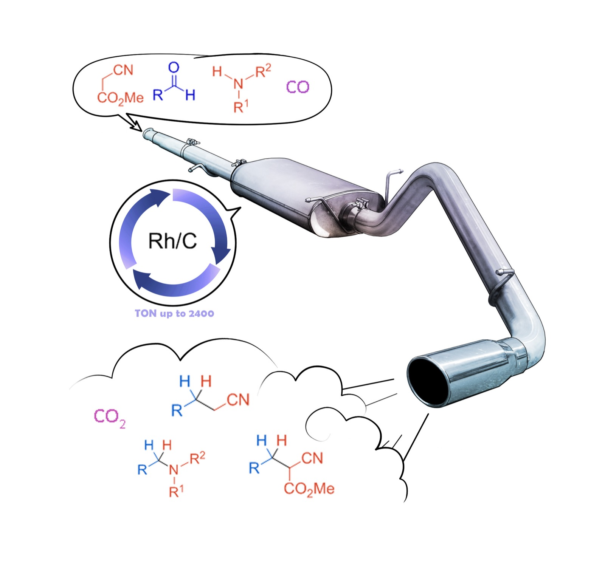

The Chemistry for me
Official web page of Group of Effective Catalysis
Steel is being produced in big amounts every year. Carbon monoxide is the main waste in this production and it should be used for industry use. Reducing without external source of hydrogen allows to avoid hydrogenation functional and protecting groups.

Publications
Read More When the “co-catalyst” may be the real catalyst: example of synthesis of cyclic organic carbonates
Sci. China Chem. 2026
When the “co-catalyst” may be the real catalyst: example of synthesis of cyclic organic carbonates
Sci. China Chem. 2026
 TBAT as “Multitool” Catalyst for Polysiloxane Synthesis, Modification, and Recycling
ACS Catal. 2026, 16, 10, 9380-9386
TBAT as “Multitool” Catalyst for Polysiloxane Synthesis, Modification, and Recycling
ACS Catal. 2026, 16, 10, 9380-9386
 Krossing’s acid as efficient and versatile catalyst for ε-caprolactone polymerization
Eur. Polym. J., 2025, 228, 113817
Krossing’s acid as efficient and versatile catalyst for ε-caprolactone polymerization
Eur. Polym. J., 2025, 228, 113817
 Direct synthesis of amides from nitroarenes and carboxylic acids via CO-mediated reduction
J. Catal. 2025, 445, 116042
Direct synthesis of amides from nitroarenes and carboxylic acids via CO-mediated reduction
J. Catal. 2025, 445, 116042
 Reductive alkylation of ketones with aldehydes using a simple catalyst and waste reductants
J. Catal. 2025, 454, 116583
Reductive alkylation of ketones with aldehydes using a simple catalyst and waste reductants
J. Catal. 2025, 454, 116583
 Sodium Hypophosphite Assisted Ruthenium Catalyzed Reductive Amination under Mild Conditions
Org. Lett. 2025, 27, 50, 13711-13716
Sodium Hypophosphite Assisted Ruthenium Catalyzed Reductive Amination under Mild Conditions
Org. Lett. 2025, 27, 50, 13711-13716
Research
Read MoreSteel is being produced in big amounts every year. Carbon monoxide is the main waste in this production and it should be used for industry use.
Reducing without external source of hydrogen allows to avoid hydrogenation functional and protecting groups.


Life in the lab
Read More


Media
Read More
Interview with Denis Chusov about The Nobel Prize in chemistry in 2021

On the web page of Nature you can find highlight about our paper

Waste gases from steelmaking repurposed to prepare pharmaceutical